Фукуок — наши места
Наш топ-10
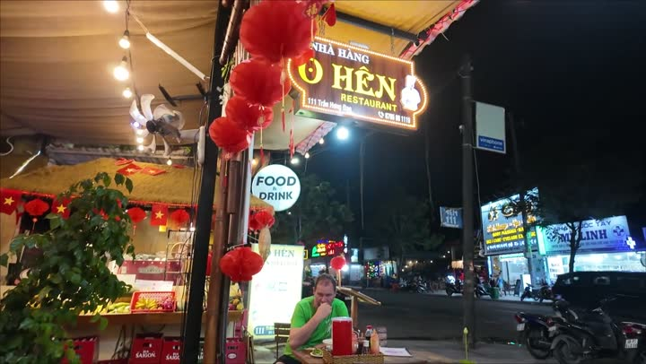
Самая длинная канатная дорога (Sunworld Hòn Thơm - Hon Thom Cable Car Phu Quoc)активный отдых · 👍 Советуем · средне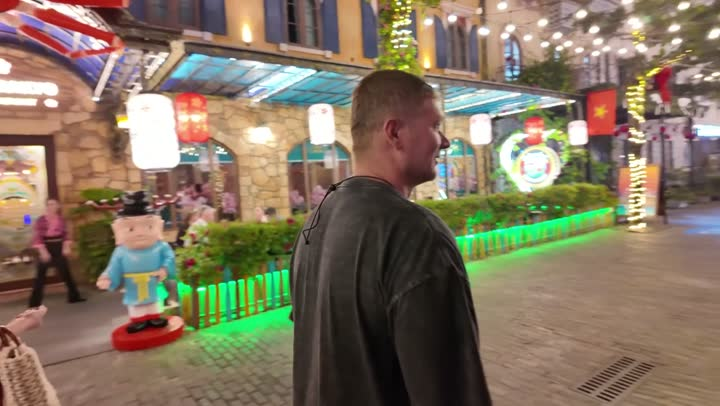
Фукуок (Phú Quốc)остров · 👍 Советуем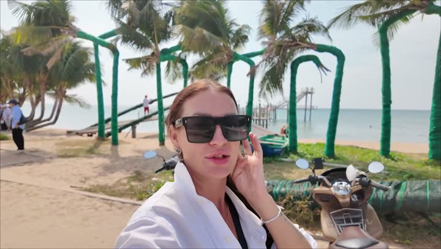
Пляж с самолётамипляж · 👍 Советуем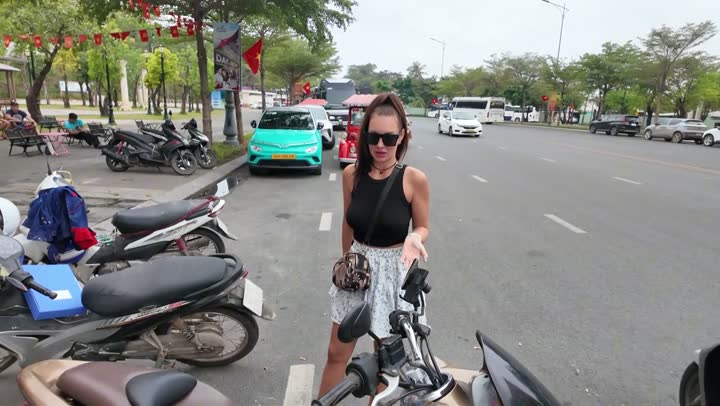
Аренда байков «Сомлен»аренда транспорта · 👍 Советуем · дёшевоБуфет «Таймс Корнер»безлимитный буфет · 👍 Советуем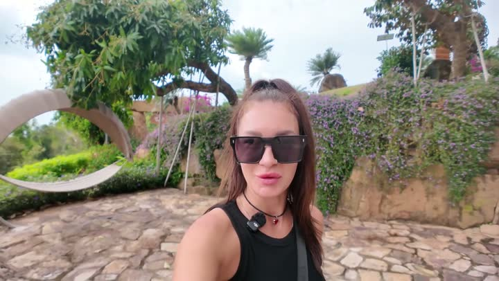
Сансет Таунгорода и районы · 👍 Советуем · дорого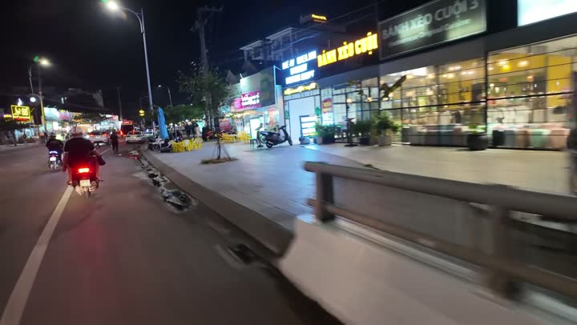
Донгдонггорода и районы · 👍 Советуем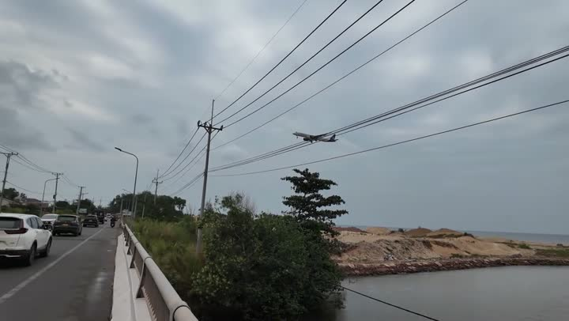
Обзорная площадка «Пик»смотровая · 👍 Советуем · средне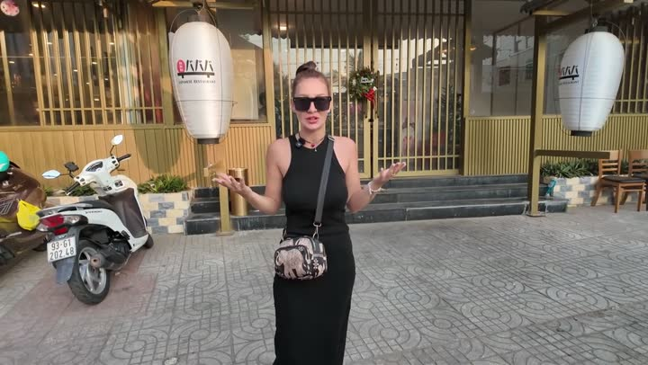
Бабанкафе и ресторан · 👍 Советуем · средне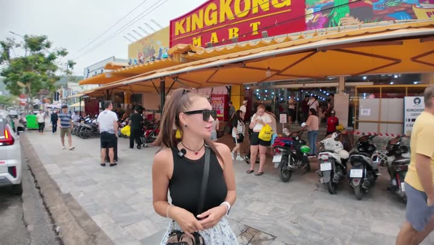
Торговый центр Кинг Конг Март (Kingkong Mart)торговый центр · 👍 Советуем · среднеГде поесть — 7
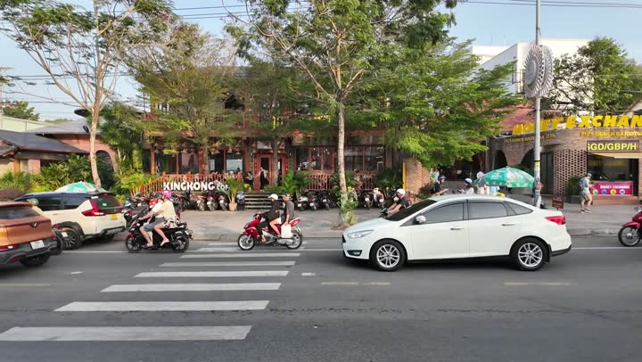
Кинг кофекофейня и десерты · 👍 Советуем · дёшево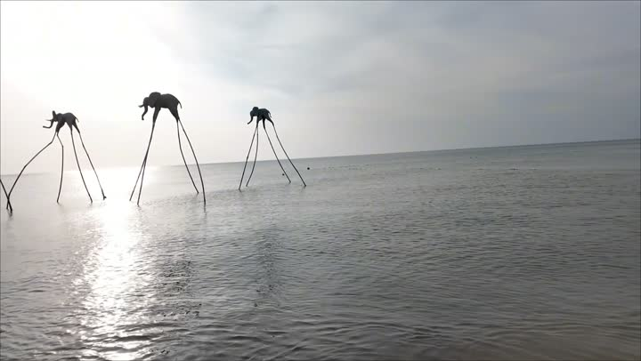
Кафе в районе Донгдонгкафе и ресторан · 👍 Советуем · дёшево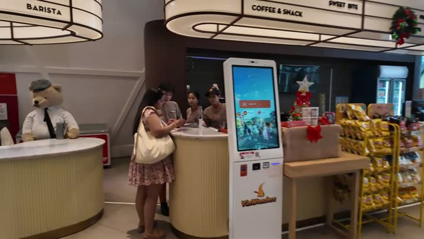
Теди кафекофейня и десерты · 👍 Советуем · дёшево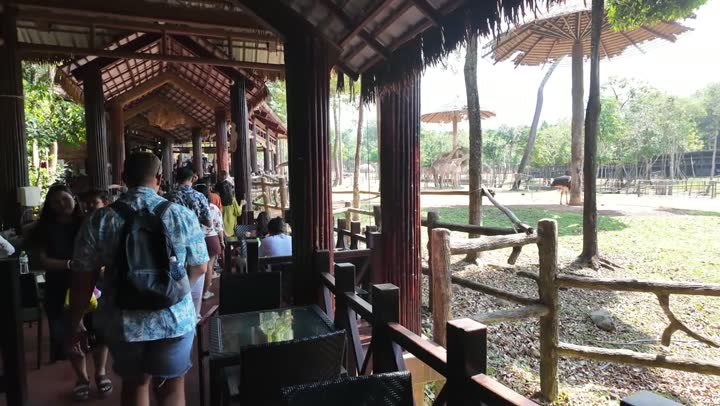
Кафе с жирафами (Giraffe Restaurant)кафе и ресторан · 🤔 На любителя · средне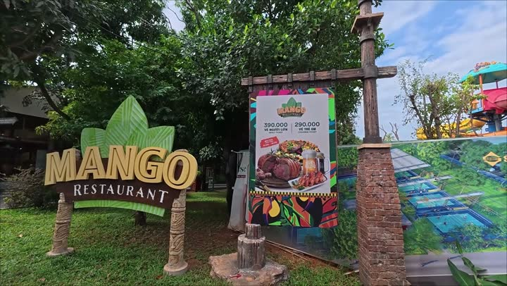
Ресторан Мангакафе и ресторан · 🤔 На любителя · дорогоБесплатно — 3
С детьми — 4
Красивые виды — 7
Бюджетно — 5
Частые вопросы — Фукуок
Где лучше остановиться на Фукуоке?
Мы рекомендуем отель Лос — просторные номера, чистая мебель и большой телевизор. Также понравился район Sunset Town с европейской атмосферой.
Какие достопримечательности посетить на Фукуоке?
Обязательно посетите самую длинную канатную дорогу мира, парк развлечений Венеция и пляж с самолётами. Эти места подарят незабываемые впечатления.
Какую кухню попробовать на Фукуоке?
Попробуйте местную кухню в ресторане Манга или кафе в районе Донгдонг. Рекомендуем бахми-булочки с разными начинками и соленый кофе с яйцом в Кинг кофе.
Какой транспорт выбрать для передвижения по Фукуоку?
Удобно арендовать байк через Somlen. Это недорого и позволяет осмотреть все красивые уголки острова.
Все места — 29
Авто — 1
- Аренда байков «Сомлен» 👍 Советуем
Транспорт — 1
Еда — 7
- Бабан 👍 Советуем
- Буфет «Таймс Корнер» 👍 Советуем
- Кафе в районе Донгдонг 👍 Советуем
- Кафе с жирафами (Giraffe Restaurant) 🤔 На любителя
- Кинг кофе 👍 Советуем
- Ресторан Манга 🤔 На любителя
- Теди кафе 👍 Советуем
Развлечения — 4
- Венеция (район) 👍 Советуем
- Парк «Саннисайд Санта» 🤔 На любителя
- Парк развлечений «Винвандерс» 🤔 На любителя
- Самая длинная канатная дорога (Sunworld Hòn Thơm - Hon Thom Cable Car Phu Quoc) 👍 Советуем
Достопримечательности — 4
- Донгдонг 👍 Советуем
- Мост Поцелуев (Kiss Bridge) 👍 Советуем
- Обзорная площадка «Пик» 👍 Советуем
- Сансет Таун 👍 Советуем
Рынки и магазины — 3
- Мини-маркет 🤔 На любителя
- Супермаркет Кинг 👍 Советуем
- Торговый центр Кинг Конг Март (Kingkong Mart) 👍 Советуем
Жильё — 2
- Отель «Лотус»
- Отель Лос 🤔 На любителя
Природа — 1
- Перечный сад (перечная ферма) 👍 Советуем
Пляжи и острова — 5
- Пляж «Си Бич» 🤔 На любителя
- Пляж Хэ 🤔 На любителя
- Пляж с самолётами 👍 Советуем
- Пляж со звёздами (Starfish Beach) 🤔 На любителя
- Фукуок (Phú Quốc) 👍 Советуем
Животные — 1
- Сафари-парк «Винперл» 👍 Советуем
Атлас мест канала «Юля и Дима / БЕЗ ТОРМОЗОВ». Описания составлены по нашим роликам; цены — на момент съёмки. Нашли неточность — напишите нам в Telegram.